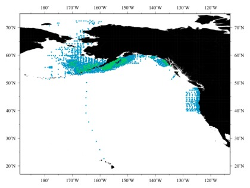
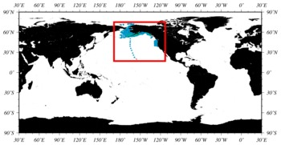

|
Data Distribution Map
|

Click on a "Plankton Data Content" icon (to the left)
to see that data type displayed on this map.
( Any gold dots in this map represent non-quantitative samples. )
|
World Location Map
|

The Red Box indicates the area of the focused map above.
|
|